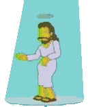
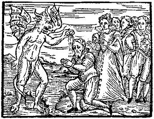

Jesús
 De: La Frikipedia, la enciclopedia extremadamente seria.
De: La Frikipedia, la enciclopedia extremadamente seria.
De la serie grandes personajes:
Jesús es cualquier cosa, hasta puede ser tu computadora
| Nacimiento
|
Navidad
|
| Muerte
|
Cuando comienza Pascua
|
| Ocupación
|
Nada , algunos dicen que es aliado de pedobear por su frase "dejad que los niños vengan ami "
|
| Nacionalidad
|
Israelpita
|
| Malo o bueno
|
Bueno para los niños que creen en el pito Jesús , malo para nosotros ....(putos Católicos
|
| Atentados contra la humanidad
|
es el único que a subido a los cielos "desde allí ha de venir a juzgar vivos y muertos"
|
| Religión
|
Chucknorrisismo
|
| Notas
|
Es fan del break dance (ver articulo del Papa )
|
«En verdad os digo que desde aquí se ve tu casa.»
~ Jebús en la cruz describiéndole el panorama a Pedro.
«¡Malditos sean!, ¡hijos de su puta madre!, ¡se quemarán en el marmol del infierno por la eternidad!...»
~ Jebús en la cruz acerca de los romanos y/o judíos antes de que llegara la prensa.
«En verdad os digo que los perdones, Padre, porque no saben lo que hacen...»
~ Jebús en la cruz acerca de los romanos y/o judíos luego de que llegara la prensa.
«En verdad os digo que Kuchiyose Edo Tensei no Jutsu»
~ Jebús ante Lazaro.
«Jesus es un mito, como los duendes y los esquimales»
~ Homer Simpson explicando la existencia de Jebús
«-Kage bunshin no Jutsu»
~ Jesús Ninja al multiplicar los panes y pescados.
«-Maté a Jesús. ¡Hijo de puta!»
~ Kyle Broflovsky al haber matado a Jesús, para que resucite fuera de la celda en donde estaban atrapados ambos.
«Dios mio, han matado a Ken..digoo a Jesus. ¡Hijos de puta!»
~ Stan y Kile al ver como moria Jesus
«Dejad que los niños se acerquen a mí...»
~ Jesús y Michael Jackson.
«Los pueblos antiguos amaban cosas como el sol o la luna, Gracias a dios recuperamos la cordura, y ahora veneramos a un carpintero de hace dos mil años»
~ Bart Simpson acerca del cristianismo.
Jebús es un personaje de ficción fundador del cristianismo. Se le conoce por muchos nombres, pero se le ha conocido en varias personalidades, a saber:
 Dancing Jesus, no debe confundirse con Jebús

Jesús haciendo uno de sus milagros
Jesús predicando la Buena Nueva y la paz eterna

Jesus llevando su mensaje de amor a todo el mundo y se nota como nos ama el muy hijo de puta
Jesus es
otaku, aqui se le ve en una convención
 Jesús bautizando a un grupo de judíos.

Como todo el mundo, Jesús también tuvo algún fallo que otro.
Aunque se trate de la misma persona, sus distintas venidas al mundo están recogidas en distintas entradas dado que son vidas distintas.
La Biblia nos dice que morirá definitivamente en el año 3333 d.C., cuando un grupo de representantes del pequeño comercio y pescadores lo condene a la cruz eléctrica por arruinarles transformando el hagua en vino y el pan en peces. Dos meses después, Dios vengará la muerte de su primogénito, viajará al pasado hasta el año 3332 y mirará fijamente al tiempo, quien sabiamente decidirá no avanzar.
Principales venidas
Principales imitadores
Historia
Jesús de Nazaret, mejor conocido como el payaso de la cruz, el redentor transexual, o el emo rey de los judíos, tuvo un comienzo muy raro:
Su progenitora María, era una prostituta muy hábil que para evitar ser descubierta cuando su esposo José empezó a sospechar que algo andaba mal al verla con síntomas de embarazo, logro engañarlo diciéndole que el Espíritu Santo (también conocido como la palomita violadora, o el pajarito necio de Dios) era el responsable.
Posteriormente, Jesús siendo un hijo de puta de una familia pobre y miserable, decidió dedicarse a la estafa, haciendo montajes por toda Judea, y diciendo que eran milagros, con lo cual logro hacerse con un buen dinero y pudo satisfacer algunas necesidades reprimidas, por ejemplo, tuvo una aventura muy excitante con María Magdalena, con quien desde un principio congenio muy bien, ya que le recordaba mucho a su madre.
Pero finalmente a Jesús se le acabo la suerte, ya que los judíos cansados de este estafador, lo denunciaron ante los romanos, y estos hicieron justicia.
Otros
Alabado sea el Señor...y sus cigarrillos de marca
- Es el hijo bastardo de Ozzy Osbourne (dios) puesto que nunca se caso con la "VIRGEN" Maria (si claro...).
- Dícese también del apelativo para dirigirse a toda aquella persona, sea varón o hembra, que estornuda (aunque es raro que coincida con su nombre), ya que se tiene la certeza de que si no se le dice, el sujeto en cuestión sufrirá una muerte por combustión espontánea de su dedo chico del pie.
- Vive en en condado de South Park, Colorado, donde posee su propio programa de televisión.
- Se rumorea que Jesús le hace bocadillos de salchichón a Peter Griffin, debido a que lo dijo en una clase de catequesis que dió Peter.
- En una ocasión le dijo a sus apóstoles para que se notase el Ferrari Enzo, ¿Qué os parece? bonito ¿eh?
- Fue brutalmente asesinado por Soldados Romanos de apendicitis, pues hasta la época no se realizaban este tipo de cirujías, resultando muerto a causa de las ínfimas medidas de higiene que se podían permitir.
- Después de muchas investigaciones en la biblia real se supo que su nombre era joto cristo y que era un travesti que se hacia llamar María Magdalena para tener aventuras sexuales. También se supo que fue el primer emo de la tierra.
- Según algunas personas Jesucristo ha sido el primer comunista e inventor del botellon, ya que su dieta consistía en cambiar el agua por un vinito. Pero él como era pobre no tenía presupuesto para comprar coca-cola.También fue el primer pandillero ya que su plan de los fines de semana era irse con los colegas de parranda a molestar a los curas judíos. Por último hay que recalcar que era un drogadicto por que para bendecir a todo lo que se le acercaba hay que drogarse mucho pero mucho. Jesucristo tenía un sueño: ser negro pero solo consiguió salvar a unos cuantos
- Lo puedes consultar en su cuenta de correo privada: jesus.te.escucha@live.com.hvn
- Un día se fue de parranda con su colega Moises y para impresionar a las chicas, hicieron una broma
pesada estupida comparando el mar con las piernas de las muchachas bajo el argumento de: -si puedo abrir el mar, puedo abrirles las piernas.
Leyenda
La antigua leyenda urbana egipcia del monte constituye un importante conocimiento conocido a principios de siglo expuesto por dos sencillas estudiantes, una buena y una mala, en clase de pollología. Donde se afirma que Jesucristo es una Máquina Expendedora.
Esta sencilla conclusión se obtiene de la ecuación lógica de que, según la santa Biblia el susodicho individuo iba regalando panes y peces a todo el que le daba un sobao del Carrefour, lugar de buen prestigio en aquella época. Por lo que sin lugar a duda si te daba panes y peces no era ni bueno, ni piadoso, ni nada por el estilo, sino una Máquina Expendedora.
Jesús También fue crucificado a causa de Carlomagno (su hermano menor)ya que Jesús quería sufrir mas que su hermano al ver que Carlomagno metió la verga en un cactus agresivo.
Después de esta deducción la polloprofesora de pollología castigó a las discípulas por ser una información demasiado confidecial...
Jesús Ninja
Artículo principal: Jesús Ninja
Estudios recientes han demostrado que era un ninja debido a que fue capaz de controlar su chakra para caminar en el agua, además de que resucitaba muertos con la técnica prohibida Kuchiyose Edo Tensei que aprendió de Poder de Cristo (Jesucristo no jutsu).
Por otra parte, se le asocia a la creacion de la tecnica conocida como Kage Bushin No Jutsu, o multiplicacion de panes y peces, luego aprendida por Naruto.
Jesús y sus Amigos
Desde 1997 Jesús conduce su propio programa de televisión, transmitido al mundo desde el pequeño pueblo montañoso de South Park. Es un programa en el que la gente le pide consejos a Jesús, y él intenta ayudarlos. En raras ocasiones el programa se convirtió en un show de mentiras, con las consecuencias de varios heridos.
Sobre cómo llegó a ser hijo de Dios
Estudios recientes realizados por el Ilustrísimo Ansem Es Sabio han dado con la verdadera historia sobre cómo llegó a ser Chus el hijo de Dios:
Prólogo:
- Al principio, todo era nada, y entonces el Badabing badabang, Las Bolas de Dragón, las cuales, según las leyendas, concedían cualquier deseo.
Capítulo 1 de pocos: El sueño de Jesús (Chus para los amigotes)
- Jesús era un niño muy soñador e imaginativo. Y, a la vez, ambicioso. Chus quería llegar a ser un hombre poderoso y adinerado, el más poderoso de todos. y ¿qué hay más poderoso que un Dios? Ése era su deseo, ser un Dios, y estaba dispuesto a conseguirlo.
Capítulo 2 de pocos (no hay ganas de escribir mucho): Jesús y las Bolas de Dragón
- Pasaron los años y Jesús aún no había llegado ni a delegado de clase. Pero un día, llegaron a la tapicería de su padre (según la LaBiblia 1.3 José era Tapicero, y no carpintero) dos extraños sujetos, que decían estar buscando las bolas de dragón. Se llamaban Goku y Bulma (Dato: tenía buenos pechos) y, como la mayoría de las veces en cualquier anime y sin nadie saber a cuento de qué, le contaron a Chus que las bolas que buscaban concedían cualquier deseo y blabla. Jesús, todo astuto, decidió "ayudarlos en su búsqueda desinteresadamente y sin sarcasmo" (que pensaba robarles las bolas en cuanto las encontraran todas y que las usaría para convertirse en Dios, su sueño). Ellos dijeron que sí,que vale, otro tópico de anime, y fueron en busca de las Canic... esto.. Bolas de Dragón.
Capítulo 3 de 3 (sí, mejor acabo aquí): La traición de Jesús y posterior coronación como Hijo de Dios.
- Pasó un año desde que empezaron la búsqueda de las Bolas de Dragón Gokú y sus amigos,
La tetona Bulma y Jesusito. Pasaron gracias y desgracias y tal, y mucha lucha y tal y tal... (En este proceso conocieron a Yamcha, un dato sin importancia, pero bah...).
- Cuando llegaron a tener 5 Bolas, Bulma y Goku se dieron cuenta de las verdaderas intenciones de Jesús, que quería robarles las Bolas para usar el deseo en su beneficio y convertirse en un Dios. Pero Jesús, en un arrebato de hiperastucia provocada por su analidad media, fue mas rápido que ellos, y huyó al robar las 5 bolas de dragón.
- Pero claro, él no podía seguir buscando ya que no tenía el radar para buscar las demás bolas, así que dijo: "De perdíos al río...", además de mezquino y traicionero era vago. Pues eso, que con tan sólo 5 bolas de dragón invocó a Shen Long (o como se escriba). Y la conversación fue la siguiente:
- -Te concederé un deseo, el que quieras. dijo el Shen Long (lógico)
- -Oh, Sagrada Serpiente que vuela y da miedo. Deseo ser un Dios. No!! Deseo ser el Dios de los Dioses!!!
- Shen Long miró abajo.
- -Mmm, sólo 5 bolas??- preguntó
- -Siento no haber podido encontrar el resto, pero es que había atasco y...
- -Da igual, algo se podrá hacer. Pero claro, con 5 bolas no te llega para ser Dios, si acaso... no sé. ¿Te vale hijo de Dios?
- Chus lo meditó unos instantes.
- -Mmmmm... Bueno, no es lo que me esperaba, pero si no se puede nada más...
- -Lo siento chavalín, pero compréndelo: 5 bolas... no son nada. Hay veces que me han traido hasta más de la cuenta y tal... y no puedo hacer excepciones.
- -Si si, no te preocupes Long, que me conformo.
- Y así fue cómo Jesucristo llegó a ser Hijo de Dios.
- Jesús murió a los 30 y tantos años porque se le fue la olla y se metió con los romanos, que entonces eran el pueblo elegido de Diox... y eso no puede ser. Goku y Bulma encontraron las bolas varias veces y siguieron su vida como si nada.
Enlaces externos
Autor(es):
- Krusher
- Nexo
- Fordus
- Er Makina
- Hari Seldon
- Deibiz xxl
- MURO DE AGUAS
- Max Slug
- Tako
- Frikiman
Frikipedia 2005-2016, Licencia
GFDL 1.2 - Extraído por FrikiLeaks